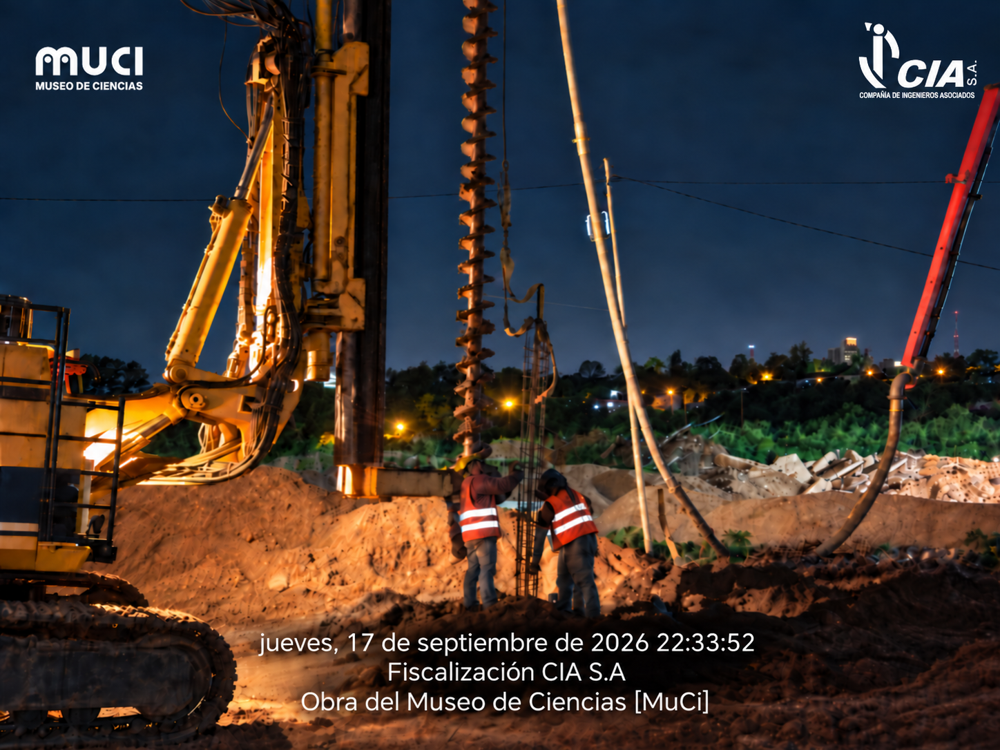
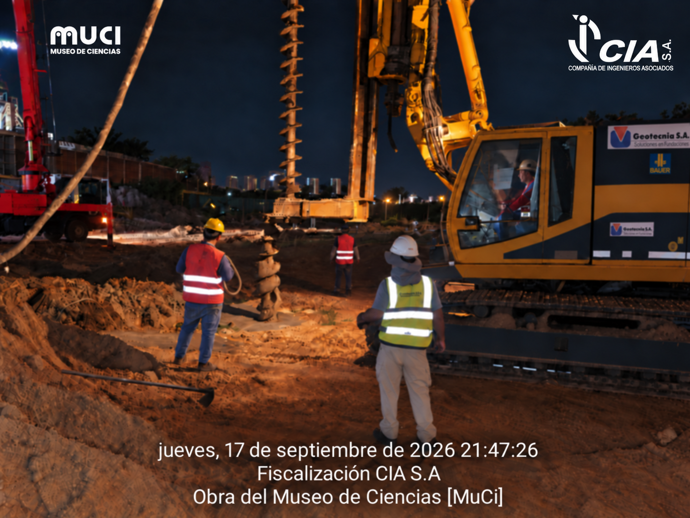
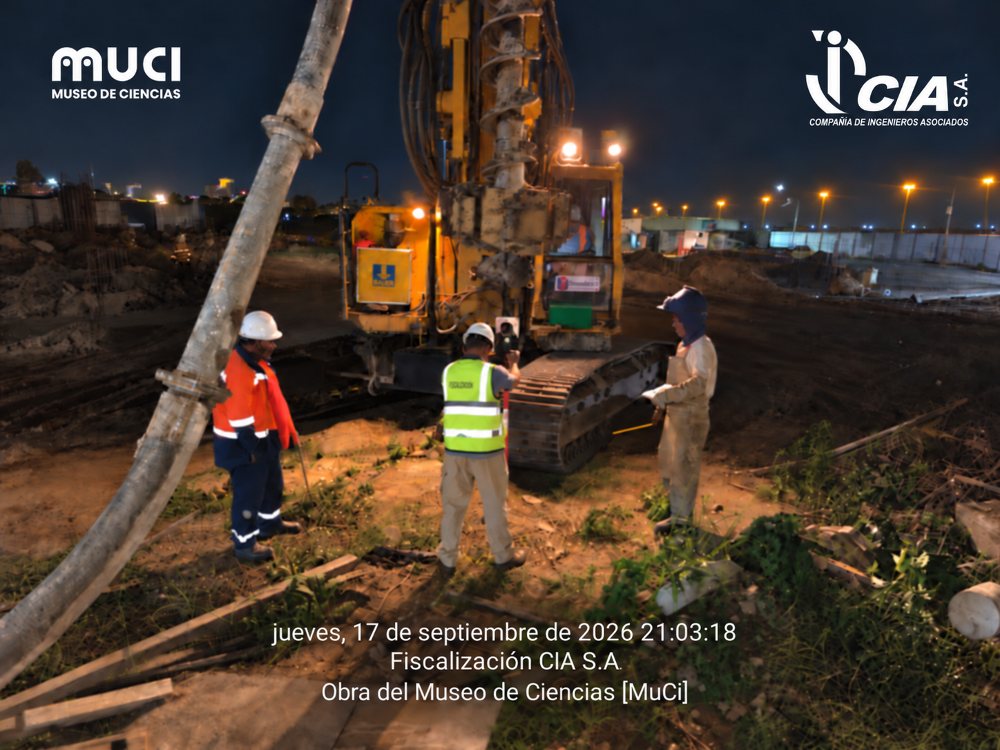
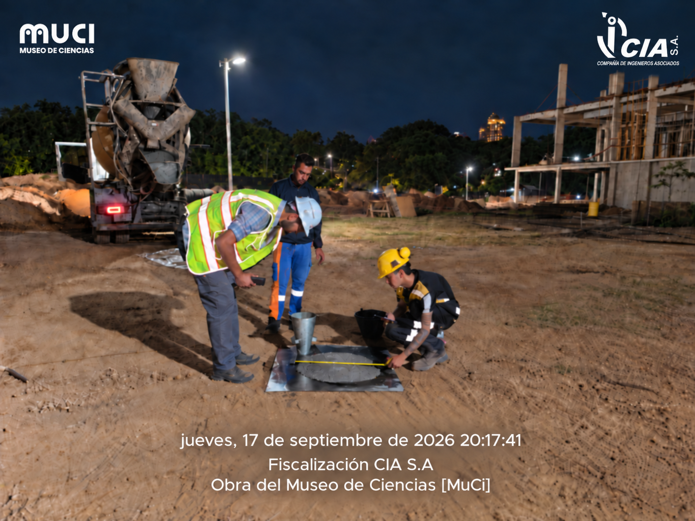
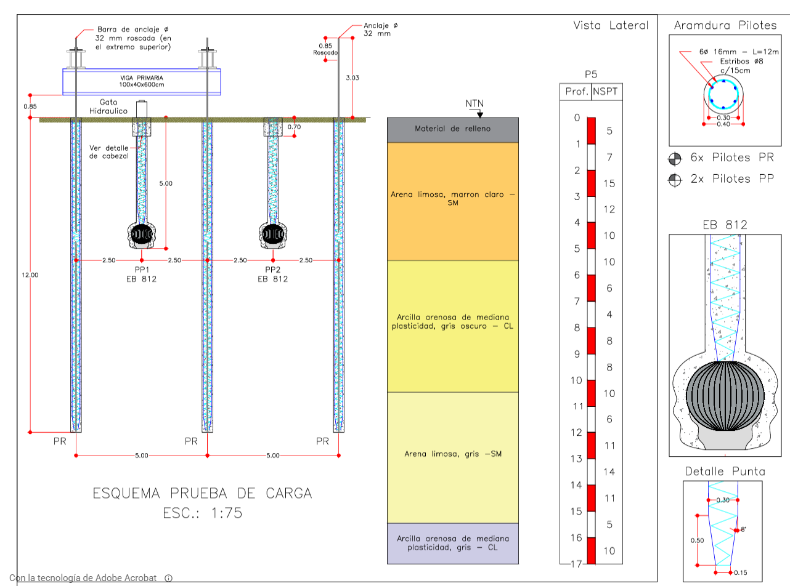

Aporte científico a la ingeniería en Paraguay: iniciaron los trabajos relacionados al ensayo de carga estática
El ensayo de carga estática en pilotes constituye un aporte científico de gran relevancia para la ingeniería en Paraguay. En la jornada de ayer se dio inicio a los trabajos relacionados a esta actividad técnica en la obra del Museo de Ciencias MuCi.
La ejecución de los pilotes destinados al ensayo fue desarrollada por el Contratista DOXA Construye y acompañada por la Fiscalización CIA S.A., verificando las distintas etapas del proceso constructivo para asegurar que los trabajos se realicen conforme a los criterios técnicos establecidos para la obra.
Acompañamiento de fiscalización
La fiscalización acompañó el inicio, desarrollo y culminación de los trabajos, realizando el seguimiento técnico de campo y la verificación de los procesos constructivos vinculados a la ejecución de los pilotes.
Aporte científico para la ingeniería
El ensayo de carga estática representa una instancia de gran valor científico para la ingeniería, ya que permitirá obtener información directa y verificable sobre el comportamiento del suelo y la respuesta de los pilotes bajo condiciones reales de carga. Estos datos resultan fundamentales para validar criterios geotécnicos, estructurales y constructivos aplicados en la obra.
Su importancia trasciende al Museo de Ciencias MuCi, porque el registro de este ensayo podrá constituirse en un aporte relevante para los estudios geotécnicos y de ingeniería en Paraguay. La documentación de campo permitirá fortalecer el conocimiento técnico local, mejorar la toma de decisiones y contribuir al desarrollo de soluciones de fundación basadas en evidencia real obtenida durante la ejecución de la obra.



